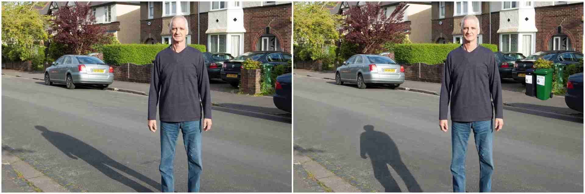
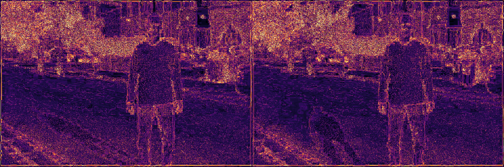
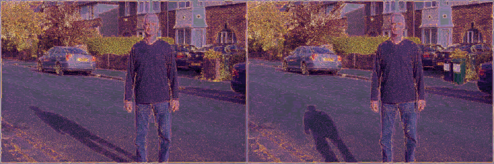
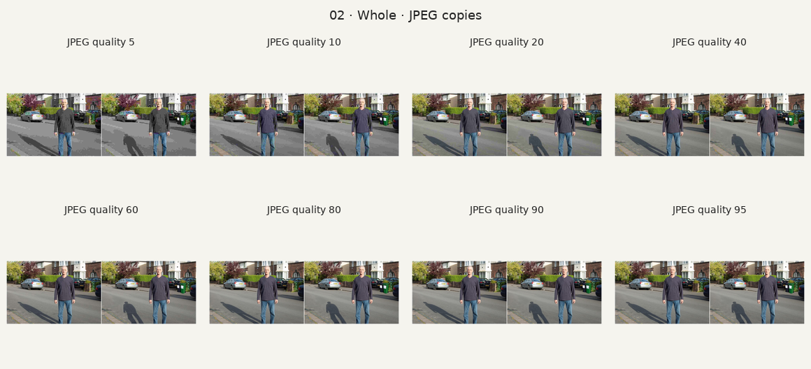
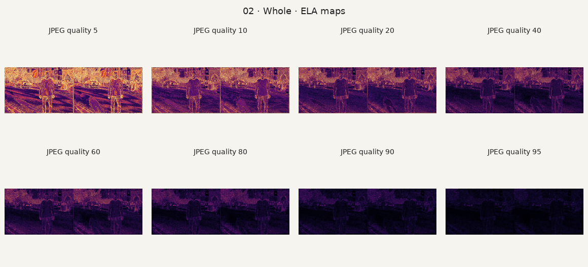
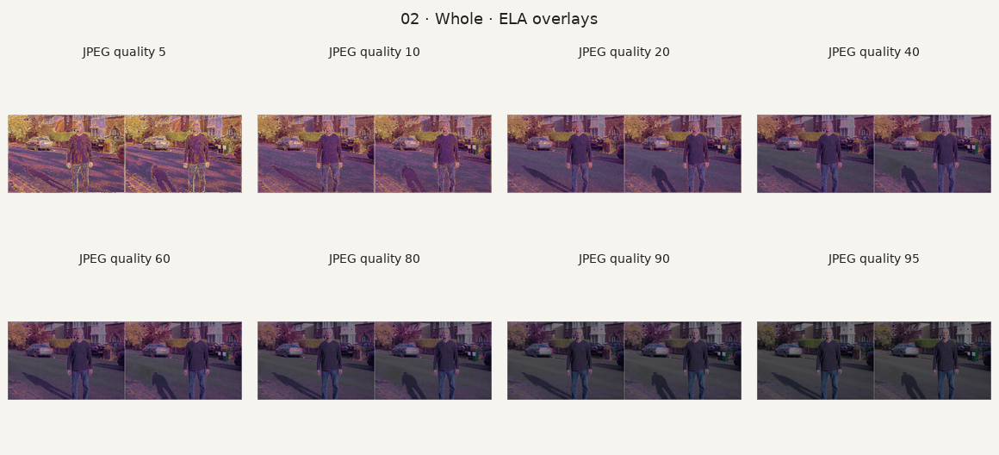
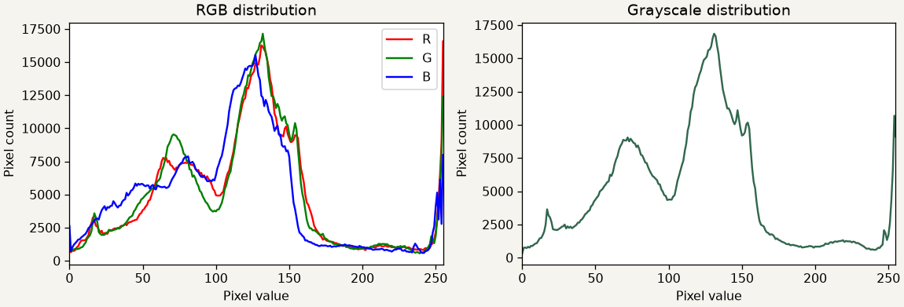
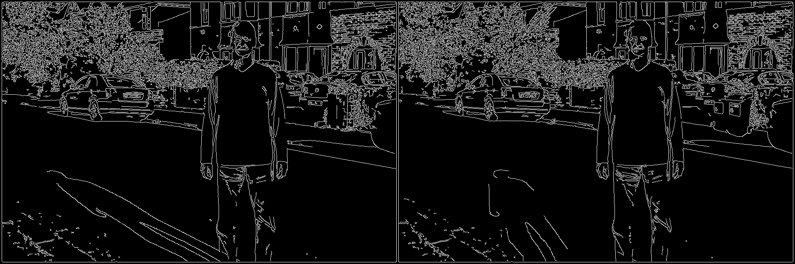
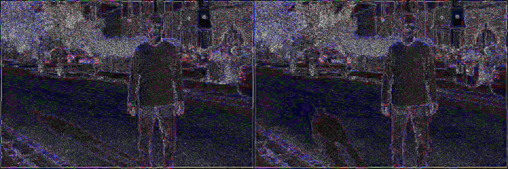

← All images · Quality-20 files
02 · 596fa37556152c22b45c6eb3.avif
Compare the whole file or either panel. Quality 20 is selected initially, and all eight analysis qualities are available.
Input: AVIF1920 × 641 pixelsFull-resolution analysisWhat does this report measure? Recompression measures AVIF-to-JPEG differences. The left and right labels denote panel position.







Analysis time: 14.149 ms.
The percentage is the share of pixels with a difference greater than 20. P95 is the difference at or below which approximately 95% of pixels fall.
Compare all qualities
Each quality starts from the same input pixels and uses the shared 0–20 display scale.



Color distribution and edges


Ordinary edges and textures can produce visible ELA differences. These views give context for the map.
RGB differences at quality 20

Each color channel is shown separately. The ×10 display gain does not affect the measurements.
How were the panels analyzed?
The collage was split down the middle at x=960. The whole image and each panel were recompressed separately. Analyzing a panel can change JPEG block alignment compared with cropping the whole-image ELA map.